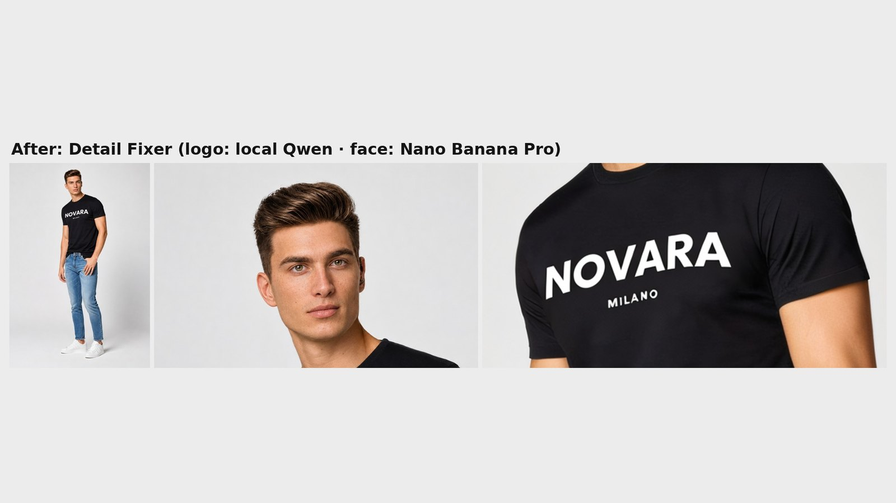

Creative Technologist · Montreal
I make AI images and video for film and advertising, and build the tools that keep them consistent.
From concept and previs to generated shots, image-to-video, revisions and the finished piece. Plus custom ComfyUI tools that fix what makes AI footage unusable: character drift, inconsistent environments, garbled logos.
- Concept
- Previs & frames
- Image-to-video
- Revisions
- Finished piece
Selected work
6 projects · client work, films, spec ads and open-source tools
Client work, Saudi production teams
Heritage environments for a promotional film, AI shots in a ten-minute healthcare presentation film, a rail campaign built around an empty-set photoshoot, and a green-screen shot that replaced the studio's CG in the final ad.
To Nora
Psychological horror set in the 1980s, written and generated in about a week on a $600 budget, with characters and locations consistent shot to shot.
BLOOM: Too Fresh
Comedy spec ad for a fictional air freshener, entered in the OpenArt Ad Awards 2026. A $200 budget, spent on a resolution ladder.

ComfyUI-DetailFixer
Open-source ComfyUI node: name an area, and it fixes only that area (a garbled logo, a face) while everything else stays untouched.

ComfyUI-ShotPlanner
Open-source ComfyUI nodes: brief or script to shot list with image and video prompts per shot, then Shot Critic and Ad Assembler.
- subscribers
- 12,000+
- views
- 1.1M
- watch hours
- 46K
AI YouTube channel
Grew and monetized a channel to 12,000+ subscribers, 1.1M views and 46K watch hours by testing formats and adjusting to audience data.
Toolkit
What I reach for on a job. More about me.
Generation
- ComfyUI (Krea, MiniMax H3, Qwen Image Edit, Wan)
- Seedance
- Kling
- Veo
- Higgsfield
- OpenArt
- Nano Banana / Nano Banana 2
- GPT Image 2.5
Building tools
- Custom ComfyUI nodes in Python
- SAM 3 segmentation
- LLM APIs: Gemini, Claude, OpenAI
- Claude + Higgsfield MCP
Previs & post
- Blender camera blocking as Seedance reference
- CapCut for assembly
- AI voice and sound in post
Contact